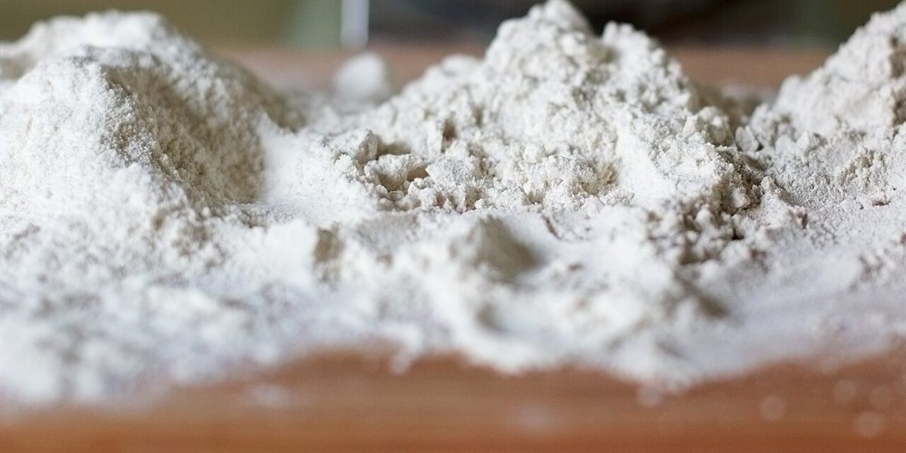

お店について
以下のコンセプトは制作側の案であり、お店の考えを示すものではありません。お店について詳しいことは準備中です(お問い合わせください)。
掲載写真はフリー素材のイメージで、店舗の実際の商品・店内ではありません。他地域で撮影されたものや撮影地が不明なものを含みます。
一
コンセプト案(制作側の案)

制作側からの案として、「毎日の食卓に寄り添うパン」という言葉を置いてみました。
特別な日だけでなく、いつもの朝やおやつの時間にそっと添えられる。そんなパンのあり方を思い描いています。
あくまで制作側の案ですので、実際のお店の考えとは異なる場合があります。
二
素材のこと

使用している素材や製法の詳細は、準備中です(お問い合わせください)。
写真は、パンの基本となる小麦粉のイメージです。
三
地域とともに

SaVa?BAKERYは、兵庫県洲本市五色町広石下1461にあります。
周辺の様子やアクセスは、アクセスのページをご覧ください。
四
お店の情報(準備中)

- 店主・スタッフ
- 準備中(お問い合わせください)
- 創業
- 準備中(お問い合わせください)
- こだわり
- 準備中(お問い合わせください)
お店についてのご質問は、お電話かInstagramでどうぞ。